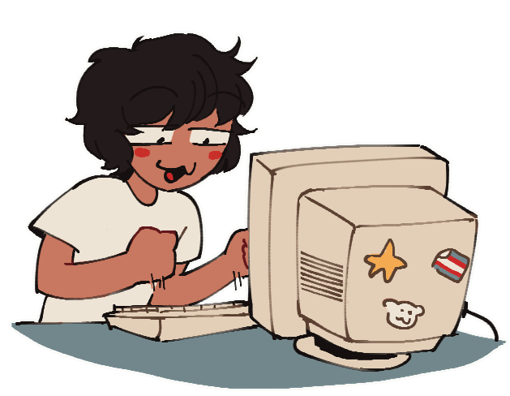

welcome to my garden
welcome to my garden

log
25/10/23 improved log box by adding scrolling
on repeat: A Perfect Circle - Rose
01/07/23 updated pagedoll, added gallery, projects and links
on repeat: The Smashing Pumpkins - Zero
29/06/23 added log and pagedoll